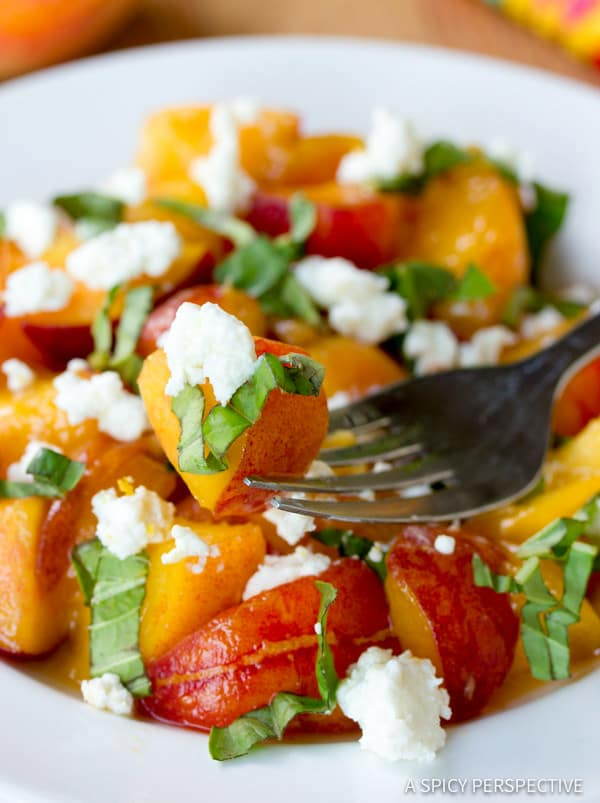

Want to keep your salsa long past the end of summer? This recipe for canning peach salsa is the one for you. If you don't want to use the canning process for this salsa, then simply skip the pectin and the sugar and you'll have an easy, zesty salsa to keep in the fridge.
Ingredients:
- 4 cups fresh peaches - peeled, pitted and chopped
- ½ cup chopped onion
- ½ cup chopped red bell pepper
- ... You know what else to put in there :)
Steps:
- Sterilize jars and lids.
- In a large saucepan, combine peaches, onion, pepper, cilantro, garlic, cumin, vinegar, and lime zest. Stir together pectin and 1/4 cup sugar. Bring to a boil, and stir in remaining 3 1/2 cups sugar. Boil for 1 minute, stirring constantly. Remove from heat, and stir for 5 minutes.
- ... You know what else to do!
Back to the main page